ホック塩冶店のもちもちごま団子br>
2019/02/27
油でしっかり揚げてあるので、ごまが香ばしくて良い風味でした。
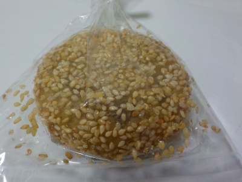
衣もジューシーでドーナッツっぽかったです。
ボリューム感のある美味しいお団子でした。
島根県出雲市塩冶町1200
2019/02/27
油でしっかり揚げてあるので、ごまが香ばしくて良い風味でした。

衣もジューシーでドーナッツっぽかったです。
ボリューム感のある美味しいお団子でした。
2018/02/26
輪切りのレンコンが３枚乗ったパンです。わりと大きくて具沢山です。
私は普段レンコンをあまり食べないので、久しぶりに食べたい！と思い購入しました。
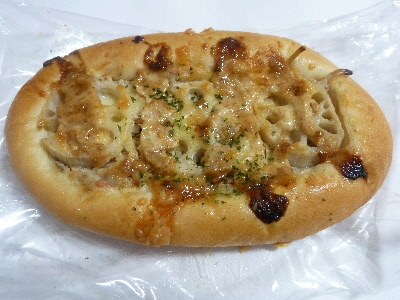
レンコンの歯ごたえが丁度良かったです。
レンコンの下にあるごぼうサラダに味付けがしっかしててあって、美味しいお惣菜パンでした。
おつまみにもなりそうです。
2017/04/21
思いっきりのいい焼き加減ですね。
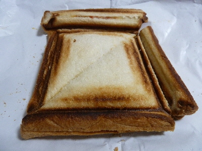
コンガリ味がしっかりしてました。
中身は、イタリアンなのでピザ味でした。
トマトソースよりもチーズ味の方が強かったかな。
既にしっかり焼いてあるんですけど、温めなおして食べたら美味しくなったかなと思いました。
2014/04/10
カリカリの皮の竜田揚げの入ったドッグです。
とっても美味しそう。
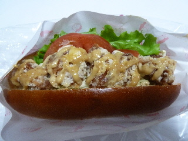
甘いパンに甘いソースが掛かっててしっかり味が付いてました。
おつまみにいいですね。
トマト味もあってちょっと複雑な味になっていました。
2014/03/20
クリームたっぷりのパンです。
あんぱんですが、アンは見えませんね。
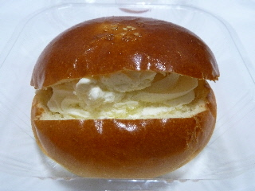
ぱくって食べるとアンもしかっり入っていました。
2重の甘さで濃いですが、クリームなのでマイルドです。
満足感のあるパンでした。
具沢山ですが、しっかりとして固めのパンだったので形を崩さずに食べれました。
2013/03/06
夕方にHOKに買い物に行きました。
今日は水曜日で安いみたいでした。
今日買ったパンは1個100円です。広告の品ってなっていました。
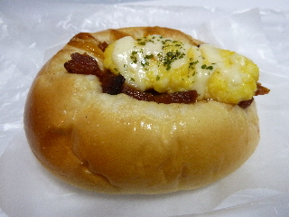
ロールパンの上に、照り焼きチキンとタマゴがのった惣菜パンです。
しっかしと味付けしてある具が美味しかったです。
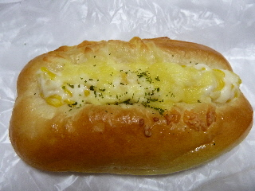
コーンマヨロールです。
こっちも美味しい味付けの惣菜パンでした。
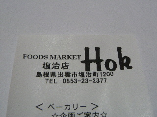
なんでかわかんないけど、レシートの店名が塩冶じゃなくて塩治になってるんですね。
「へー」って思いました。
なんか意味があるのかな？
2011/09/16
パンコーナーで販売していた焼きプリンです。
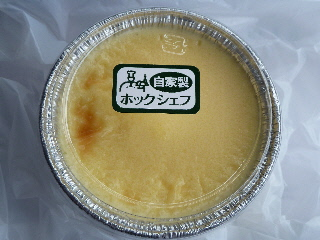
大きなサイズのプリンです。
茶わん蒸しのようなサイズなので、沢山味わえます。
あっさりめの味のプリンだったので、パクパクといただけました。
2011/05/23
ホック塩冶店で半額でパンを買いました。
180円のパンなので、レーズンとクルミが沢山入ってて美味しかったです。
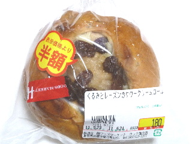
レーズンと砂糖の甘さが効いてて濃い味でした。
2011/01/11
粗挽きウインナーがくるくるっと包んであるパンです。
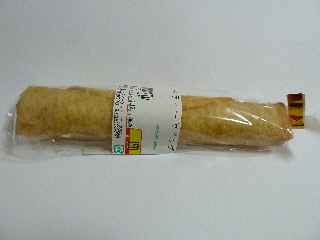
ウインナー美味しいですね。
出来立てだったらパンがもっとパリパリしてて美味しいんだろうな～って思いました。
2009/12/18
カレーマルシェって意味は分からないですが、なんだかカレーがおいしそうなパンですね。
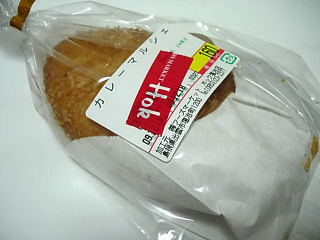
カレーパンのカレーってちょっと固めなのもの多いと思うんですが、これは少し柔らかく、甘辛いカレーが美味しかったです。
揚げパンもサクサクしてていい食感でした。
近くのパン屋
【プラント出雲店】